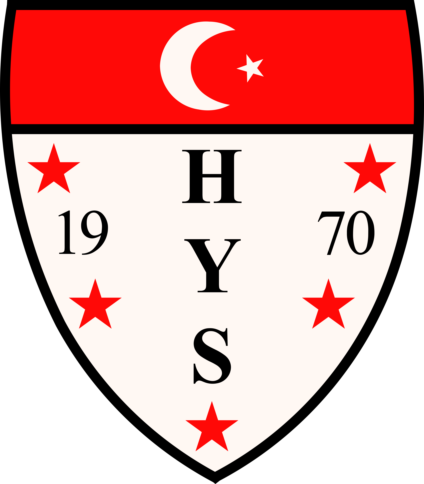

Will it be a day full of art and culture? Do you want to know more about the history of the
city? Or are you coming to Haarlem to shop extensively? Getting bored is simply not an
option here, because in this historic city full of monuments, restaurants, shops, water,
squares and parks you can literally go in all directions.
Welcome to Haarlem
A city with a rich history, beautiful monuments and a Burgundian atmosphere


-
At Olympya Haarlem you'll find a sport for everyone! You can also rent their canteen for your party or meeting. 
-
SportClub HLC is an association in Haarlem and immediate surroundings where boys and girls can go for gymnastics, guppie gym & gymkids and dance. -
Are you looking for a place where you feel at home, where you get the best personal attention and where you achieve your goals? Then Fitfabriek in Haarlem is the gym for you! -
Come to HC Haarlem! They have three artificial grass hockey pitches. Their main field (right in front of the clubhouse) is a water artificial grass field. This field has been there since September 2016. 
-
At YILDIZ SPOR you will find one of the oldest football teams in Haarlem!  -
Kinheim wants to be the close-knit and social baseball and softball club where top sport and recreational sport reinforce each other. 
-
SCIANDRI is a community driven by the power of sport and the pleasure and success that people (can) derive from sport and exercise. they believe that sports and exercise make people happier. 
-
With the relaxed atmosphere and space to work on your personal sport goal, you immediately feel at home at SportCity Haarlem. Whether you are young, old or student and whatever your objective is: you are welcome! -
Come to The Royal Dutch Chess Federationfor the chess match of a lifetime! 
-
With Hwa-Rang Dragon, whichever branch of martial art you choose with us, we always strive for a balanced curriculum full of challenges. The more balanced the challenge, the more fun it is to continue! You can flow in whenever you want, at any level!